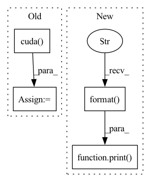

Pattern ID :23706

Before Change
train_labeled_dataset, batch_size=args.batch_size[0], shuffle=(train_labeled_sampler is None),
num_workers=args.workers, pin_memory=True, sampler=train_labeled_sampler, collate_fn=train_labeled_dataset.collate)
loss_func = nn.BCEWithLogitsLoss(reduction="none").cuda()
// define loss function (criterion)
def criterion(y_pred, y_target):
is_labeled = ~torch.isnan(y_target)
flattened_y_pred = y_pred[is_labeled].float()
After Change
if is_best:
test_metric = tmp_test_metric
shutil.copy(logger.get_checkpoint_path("latest"), logger.get_checkpoint_path("best"))
print("best val performance: {:.3f}".format(best_val_metric))
print("test performance: {:.3f}".format(test_metric))
logger.close()
writer.close()
In pattern: SUPERPATTERN
Frequency: 3
Non-data size: 4
Instances
Fragment ID: 73910918
Project Name: thuml/transfer-learning-library
Commit Name: a506d6956e5d8734b2bb14edda8df7eeac8d0896
Time: 2022-03-17
Author: 3236488847@qq.com
File Name: examples/domain_adaptation/wilds_graph/erm.py
M Class Name: AnonimousClass
N Class Name: AnonimousClass
M Method Name: main(1)
N Method Name: main(1)
M Parent Class:
N Parent Class:
M File Name: examples/domain_adaptation/wilds_graph/erm.py
N File Name: examples/domain_adaptation/wilds_graph/erm.py
M Start Line: 74
M End Line: 165
N Start Line: 69
N End Line: 150
'>
Before Change
def train(self, train_dataloader, eval_dataloader):
if self.config["gpu"]:
criterion = nn.NLLLoss().cuda()
else:
criterion = nn.NLLLoss()
optimizer = optim.Adam(filter(lambda p: p.requires_grad, self.model.parameters()), lr=self.config["learning_rate"],
weight_decay=self.config["L2"])
After Change
print("==>Train Epoch:{:0>2d} Loss:{:.4f} learning_rate:{}".format(epoch, avg_loss, lr))
// eval stage
avg_acc = self._valid_epoch(eval_dataloader, self.model, self.config["gpu"], eval_total_batch, self.config["verbose"])
print("==>Eval Acc:{:.4f}".format(avg_acc))
metrics["accuracy"].append(avg_acc)
save_name_tmp = "ep_" + str(epoch) + ".m"
torch.save(self.model.state_dict(), self.tmp_path + save_name_tmp)
scheduler.step(avg_acc)
'>
Fragment ID: 73910916
Project Name: libcity/bigscity-libcity
Commit Name: 691cf75a889019ef438062f38b0fb7d1d5fafbc1
Time: 2021-01-18
Author: 33283819+WenMellors@users.noreply.github.com
File Name: trafficdl/executor/traj_loc_pred_executor.py
M Class Name: TrajLocPredExecutor
N Class Name: TrajLocPredExecutor
M Method Name: train(3)
N Method Name: train(3)
M Parent Class: AbstractExecutor
N Parent Class: AbstractExecutor
M File Name: trafficdl/executor/traj_loc_pred_executor.py
N File Name: trafficdl/executor/traj_loc_pred_executor.py
M Start Line: 25
M End Line: 49
N Start Line: 43
N End Line: 44
'>
Before Change
// define loss function (criterion)
if args.smoothing:
criterion = LabelSmoothingCrossEntropy(args.smoothing).cuda()
else:
criterion = nn.CrossEntropyLoss().cuda()
if args.phase == "test":
After Change
if is_best:
best_test_metric = test_metric
shutil.copy(logger.get_checkpoint_path("latest"), logger.get_checkpoint_path("best"))
print("best val performance: {:.3f}\n test performance: {:.3f}".format(best_val_metric, best_test_metric))
def train(train_loader, model, criterion, optimizer, epoch, writer, args):
batch_time = AverageMeter("Time", ":3.1f")
'>
Fragment ID: 73910921
Project Name: thuml/transfer-learning-library
Commit Name: d341bd718cfb21441c0e530b3f70ded0a723f5be
Time: 2022-03-16
Author: 3236488847@qq.com
File Name: examples/domain_adaptation/wilds_text/erm.py
M Class Name: AnonimousClass
N Class Name: AnonimousClass
M Method Name: main(1)
N Method Name: main(1)
M Parent Class:
N Parent Class:
M File Name: examples/domain_adaptation/wilds_text/erm.py
N File Name: examples/domain_adaptation/wilds_text/erm.py
M Start Line: 51
M End Line: 158
N Start Line: 40
N End Line: 169